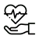
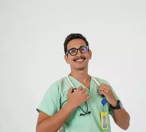
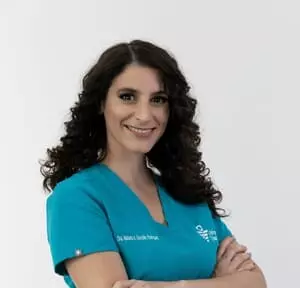

Cuidando da sua saúde com excelência
Agende sua consulta hoje mesmo com os melhores profissionais.
Agendar AgoraPor que nos escolher?
Equipe Qualificada
Médicos especialistas prontos para te atender.
Tecnologia
Equipamentos de última geração para seus exames.

Atendimento Humano
Foco no bem-estar e conforto do paciente.
Conheça Nossa Equipe

Dr. Lucas Almeida
Cardiologista

Dra. Ana Beatriz
Pediatra
Dr. Ricardo Costa
Dermatologista
Dra. Sofia Mendes
Dentista
Dr. Makion Baguncinha
Urologista
Dr. Davi Lima
Psiquiatra